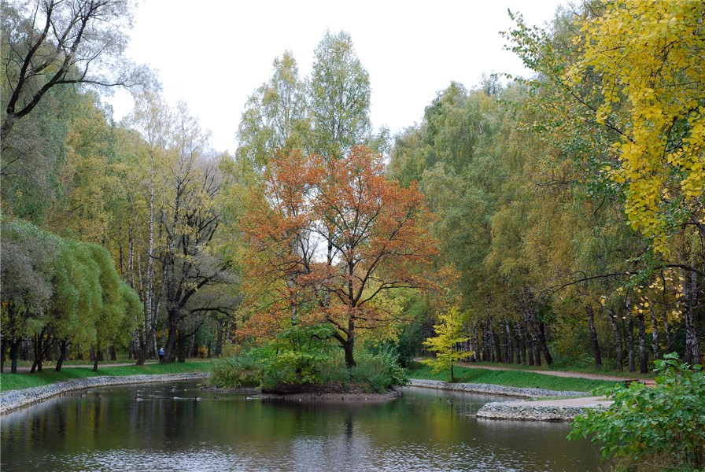
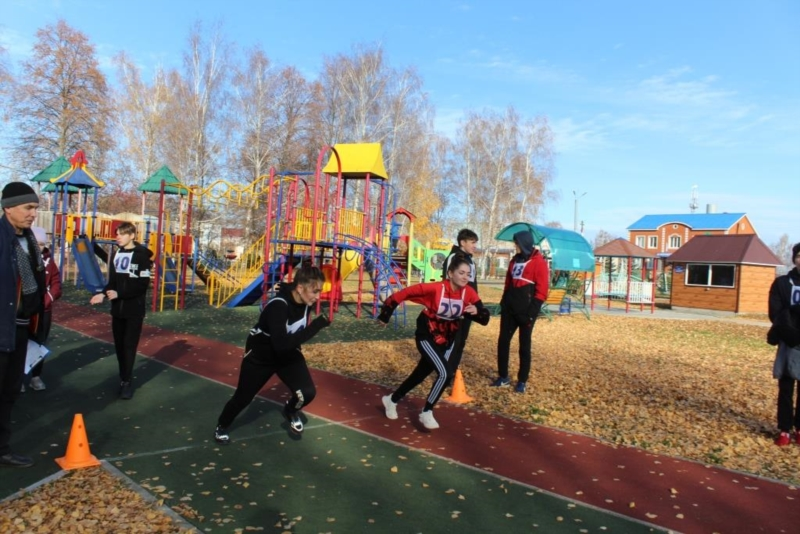

Сокольники
Соко́льники — парк на территории района Сокольники на северо-востоке Москвы, с юга ограниченный Сокольническим Валом, с востока — Богородским шоссе, с севера — Ростокинским проездом, с запада — линией Ярославской железной дороги. На севере смыкается с Лосиным островом. Площадь парка — 516 гектаров. В XVI—XVII веках на месте сегодняшнего парка проходили царские и великокняжеские соколиные охоты, откуда место и получило своё название.

Планировочная структура парка радиально-кольцевая. От главного входа Сокольнический Павильонный проезд выходит к Сокольническому кругу. От него веером расходятся восемь аллей: на запад и северо-запад — Песочная аллея, 1-й, 2-й и 3-й Лучевые просеки, на север и северо-восток — 4-й, 5-й, 6-й Лучевые и Майский просеки. Все они, кроме Песочной аллеи, пересекаются полукольцевыми Митьковским проездом и, кроме Майского просека, Поперечным просеком. Четвёртый лучевой просек проходит через Фестивальную площадь с выставочными павильонами.
В конце XIX века вдоль каждого из исторических просеков были высажены деревья определённых пород: 1-й был засажен берёзами, 2-й и 6-й — вязами, 3-й — тополями, 4-й — клёнами, 5-й — ясенями, Майский просек — лиственницами. За Путяевскими прудами был сооружён лабиринт в виде пяти переплетающихся кольцевых аллей, обсаженных елями. Эта парковая конструкция сильно пострадала во время урагана 1904 года.
В парке насчитывается 13 водоёмов: каскад из шести Путяевских прудов (6,1 га); каскад из пяти Оленьих прудов (около 3 га); Собачий пруд (0,3 га); Золотой пруд (1,1 га). На Собачьем и Оленьих прудах летом можно увидеть цветущие кувшинки-нимфеи, выращенные по специальной технологии в мелких тёплых искусственных водоёмах в большом парковом розарии, которому в середине 2000-х годов были подарены первые три сорта этих растений — белая кувшинка «Марлеака Альбида», розовая — «Марлеака розеа» и тёмно-розовая — «Аттракцион».
В парке находится ряд спортивных объектов, крупнейшие из них — физкультурно-оздоровительный комплекс «Сокольники» (действуют секции различных единоборств, танцевальный зал, шахматно-шашечный клуб), центр спортивных развлечений на открытом воздухе «Лидер» (в последнем имеются площадки для занятий футболом, волейболом, бадминтоном, теннисом), теннисный городок (располагает двумя теннисными кортами, а также столами для настольного тенниса). Организован прокат веломобилей, велосипедов, сегвеев и различного спортивного инвентаря. Имеются зоны активного отдыха: скейт-парк, скалодром, крупнейшая в Москве крытая картинговая трасса с треком длиной 450 м, зона активного отдыха «ПандаПарк».
В 2008 году на территории парка открылся Современный музей каллиграфии. С 1 мая 2013 года в парке действует площадка для проведения публичных мероприятий. С 2011 года на территории парка организован Клуб собаководов. В конце 3-го Лучевого просека возле Верхнего Путяевского пруда расположена большая тренировочная площадка с дрессировочными снарядами.